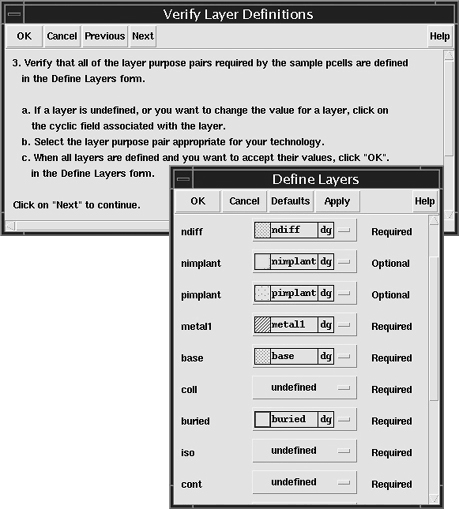

1
Overview and Installation
This manual contains information about installing and modifying a collection of sample parameterized cells (Pcells) built procedurally with relative object design (ROD) functions of the Cadence® SKILL programming language.
Using these sample Pcells requires knowledge of the Virtuoso layout editor and the SKILL programming language and its ROD functions. The following documents provide more information on these tools.
This user guide is aimed at developers and designers of integrated circuits and assumes that you are familiar with:
- The Virtuoso Studio design environment and application infrastructure mechanisms designed to support consistent operations between all Cadence® tools.
- The applications used to design and develop integrated circuits in the Virtuoso Studio design environment, notably, the Virtuoso Layout Suite, and Virtuoso Schematic Editor.
- The Virtuoso Studio design environment technology file.
Component description format (CDF), which lets you create and describe your own components for use with Layout XL.
This chapter contains conceptual information about the sample parameterized cells and a guide to installing these devices into your library.
- About the Sample Parameterized Cells
- Installing the Sample Parameterized Cells
- Modifications Made to the Technology File
About the Sample Parameterized Cells
Sample parameterized cells are layout views of devices built using relative object design (ROD) functions. A parameterized cell (Pcell) is a graphic, programmable cell that lets you create a customized instance each time you place it. The Pcells in this collection serve as examples of how you can use ROD functions to create your own Pcells. You can modify the sample Pcells to suit your specifications. The files containing the device code reside in the directory
your_install_dir/tools/dfII/samples/ROD/rodPcells/components/device
where your_install_dir is the path to the Cadence® software directory and device is the directory containing the code for the device you want to modify. The following table provides the directory name for all of the sample Pcells.
| Device Name | Directory |
|---|---|
Installing the Sample Parameterized Cells
Before you can use the sample parameterized cells, you must install them into a library. The installation script defines new device classes in your technology file and defines devices for each new class. During the installation process, you have the opportunity to specify the layer definitions and design rules for your technology.
Install Sample Pcells in One Technology Library
Installing sample parameterized cells in different technology libraries across the technology graph can lead to conflicts. When sample parameterized cells are installed, the technology database is updated with the parameters and values (techParams). These parameters and values must be unique within the technology graph. The following is an example of how conflicts can be created when installing parameterized cells in different technology libraries.
For more information about the technology file in general, refer to the Technology File and Display Resource File User Guide. For more information about the changes the installation script makes to your technology file, see “Modifications Made to the Technology File”.
At any time during the installation process you can
- Click OK to apply any changes you have made and exit the installation
- Click Cancel to stop the installation process
- Click Previous to go to the previous step
- Click Next to apply any changes and go to the next step in the installation
To install the sample parameterized cells into a library, follow the steps below.
-
Type the following in the Command Interpreter Window (CIW) input line:
setSkillPath(cons(prependInstallPath("samples/ROD/rodPcells") getSkillPath())) load("install/spcLoadInstall.il") spcInstall()
The Welcome to the Sample Parameterized Cell Installation form appears. Read the form before continuing.
-
Click Next.
The Load Devices form appears.
-
Choose the devices you want to install and click Next.
For more information on the devices, see Chapter 2, “Sample Parameterized Cells Reference.”
The Select Destination Library form appears.
-
Choose a library from the Available Libraries cyclic field and click Next.
The SKILL code for the devices is loaded into the directory
where lib is the path to the destination library you selected.lib/examplePcellLib
Only libraries that were created by compiling a technology file will be available for installing the sample Pcells.
The Verify Layer Definitions form and the Define Layers form appear.
There are three columns in the Define Layers form. The first lists the name of the layers used in the SKILL code for the devices, the second lists the corresponding layer-purpose pairs, and the third lists whether the layers are required or optional. A cyclic field labeled undefined identifies layers not previously defined in the technology file of the chosen library. You must define layer-purpose pairs for all required layers before continuing. You can also use this form to modify previously defined layers of the technology file. The following is a description of the layers used in the Pcell code.
Collector layer of the npn device and the base layer of the pnp device
Base layer of the npn device and the collector and emitter layers of the pnp device
-
Click the cyclic field to the right of the layer you want to define or modify.
A pop-up menu with several layer choices appears.
-
Click Next in the Verify Layer Definitions form.
The Verify Required Rules form and the Define Rules form appear.
In the Define Rules form, any design rules that were not previously defined in the technology file default to-1.You must replace any -1 values with the correct design rule value. Values left at the default of -1 will prevent your technology file or your Pcell from evaluating.
The rules in the Define Rules form and the values you assign to them are added to thetechParamssubclass of thecontrolsclass of the technology file. For more information on design rules and the technology file, refer to the Technology File and Display Resource File User Guide. - Click in the field to the right of the rule you want to modify.
-
Click Next in the Verify Required Rules form.
The Verify Source Directory form appears.
In this form, you specify which directory contains the source files for the devices you want to install. By default, this is
your_install_dir/tools/dfII/samples/ROD/rodPcells
- (Optional) If you have copied and modified the default source files, type the path to the modified files in the field, or click Set Directory to browse for the correct path.
-
Click Next.If you specified an invalid path, the Install Path Error dialog box appears. Click OK in the dialog box and specify a valid path.The Loading Status form appears and confirms that the files for the devices you chose to install were found in the directory.
-
Click Next.
The Initialization Choices form appears.
In this form, you choose where to include instructions for loading the Cadence SKILL language files defining the devices.
-
libInit
ChoosinglibInit.ilcreates a file in the library directory or adds additional information to an existinglibInit.ilfile. All applications read thelibInit.ilfile, which enables all applications and environments to evaluate the sample Pcells. For more information about thelibInit.ilfile, refer to “Loading Pcells from the libInit.il File”. -
cdsinit
Choosing.cdsinitcreates a file in the library directory, or adds additional information to an existing.cdsinitfile. When loading Pcells from the.cdsinitfile, the sample Pcells are loaded when you start the software.
Not all applications read the.cdsinitfile. Sample Pcells will not be evaluated for translation in background mode by applications that do not use the.cdsinitfile. For any background translation that does not use the.cdsinitfile, you need to explicitly load the SKILL code for the devices. -
none
Choosing none requires you to load the SKILL files manually before the system can evaluate your Pcells. The following example loads the bentmos sample Pcell.load(strcat(ddGetObjReadPath(ddGetObj("RODpcells"))
"/examplePcellLib/spcLoadUtilities.il"))
load(strcat(ddGetObjReadPath(ddGetObj("RODpcells"))
"/examplePcellLib/utility.il"))
load(strcat(ddGetObjReadPath(ddGetObj("RODpcells"))
"/examplePcellLib/bentmos.callback"))
load(strcat(ddGetObjReadPath(ddGetObj("RODpcells"))
"/examplePcellLib/bentmos.il"))
-
libInit
-
Make a selection and click Next.
The Installation Completed form and the Save Technology File form appear.
The changes you make to the layer definitions and design rules during this installation session override any previous changes you made to the technology file.
-
In the Save Technology File form, click OK to save your changes to the library shown in the cyclic field.
A confirmation dialog appears.
-
In the confirmation dialog, click Yes.
The installation is complete. - Click OK to exit the installation utility.
Validating the Installation
To validate the installation of the sample cells, follow these steps:
- Open the Library Browser and verify that the new device masters exist in the destination library.
- Place each of the devices in a new layout view and verify that they are created properly.
-
If you were prompted to save your technology file, exit and then restart the Cadence software to verify that the modified technology file and the
libInit.ilor.cdsinitfiles load correctly.
Loading Pcells from the libInit.il File
When loading Pcells from the libInit.il file, the system loads the sample Pcells when the library is accessed (the first time a cellview is opened). If the sample Pcells are loaded into multiple libraries and from your libInit.il, the first time each of the libraries in which the sample Pcells have been installed is accessed, the Pcells will be evaluated. This causes multiple messages about redefined functions to appear in the CIW. These redefined messages can safely be ignored. To avoid multiple redefined messages, you can add additional SKILL code to your libInit.il files. The following example adds an unless(boundp( ’SPCLOADED) statement before the first line of code that was added by the installation program and sets the global variable SPCLOADED to t after the last device load call.
unless( boundp( 'SPCLOADED) ; Adds global variable and checks if bound.
load(strcat(ddGetObjReadPath(ddGetObj("designLib"))
"/examplePcellLib/spcLoadUtilities.il"))
load(strcat(ddGetObjReadPath(ddGetObj("designLib"))
"/examplePcellLib/utility.il"))
load(strcat(ddGetObjReadPath(ddGetObj("designLib"))
"/examplePcellLib/mos.il"))
load(strcat(ddGetObjReadPath(ddGetObj("designLib"))
"/examplePcellLib/mos.callback"))
SPCLOADED = t
); Sets the global variable to true if Pcells are loaded.
The use of the libInit.il file has some restrictions. SKILL code loaded by the libInit.il file should only assume that low-level SKILL functions are available, such as those permitted in parameterized cells. When you use SKILL routines within libInit.il, use only the following functions:
-
The SKILL functions documented in the SKILL Language Reference Manual; for example:
car,if,foreach,sprintf,while. -
SKILL functions from the following families:
dbddcdfrodtech
No SKILL code loaded by the libInit.il file should be dependent on graphical SKILL functions like hiSetBindKey.
To call functions or load files that use graphical SKILL functions, for example, from the hi, ge, le, sch families, make the code conditional with isCallable.
if(isCallable(’hiSetBindKey) hiSetBindKey(....) ... )
Modifications Made to the Technology File
The installation script makes several modifications to your technology file.
Layer Correspondence Parameters in techParams
The installation script creates a table in the techParams subclass that lists the generic layer functions used in the parameterized cells and the corresponding layer numbers in your particular technology. You define this data when you fill in the Define Layers form.
techParams subclass may also contain router translation rules that are unrelated to these sample parameterized cells.Below is an example of this table of parameters and values.
;( parameter value )
;( ---------- ----------------- )
( poly ("poly1" "drawing") )
( metal1 ("metal1" "drawing") )
( cont ("contact" "drawing") )
( nimplant ("txtndiff" "drawing") )
( pimplant ("txtpdiff" "drawing") )
( ndiff ("ndiff" "drawing") )
( pdiff ("pdiff" "drawing") )
( nwell ("nwell" "drawing") )
( pwell ("viaE" "drawing") )
The techParams subclass also receives several variables that define characteristics of the sample devices:
| This Variable... | Is Used in This Cell... |
|---|---|
Physical DRC Rules
The minEnclosure, minSpacing, and minWidth rules in the physicalRules section of the technology file are used to set default values in the Define Rules form. The installation script adds additional rules to the physicalRules section for any design rules that were not previously defined in the technology file. These rules are shared by other Cadence design framework II applications.
Device Classes
In the devices section of the technology file, the installation script creates device classes for each cell. The class for the spcbentnmos and spcbentpmos devices is syBGEnhancement. The classes for the other devices begin with the prefix spc and follow the naming of the devices themselves. For example:
tcCreateDeviceClass( "layout" "spcsimple_mos" )
During the installation script, you are prompted to install SKILL functions for the cells in the libInit.il file (or in your .cdsinit file). The device classes in the technology file call these SKILL functions.
Return to top